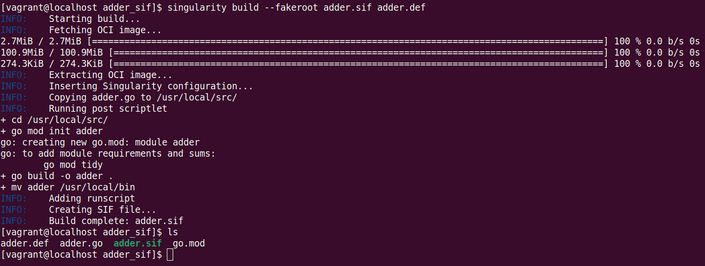
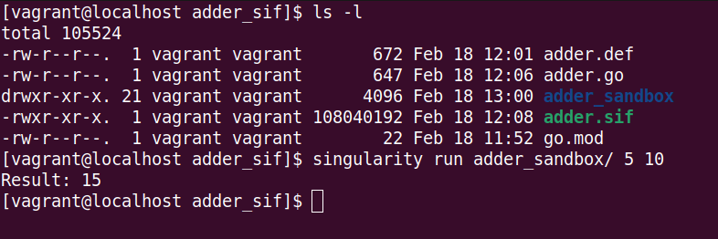
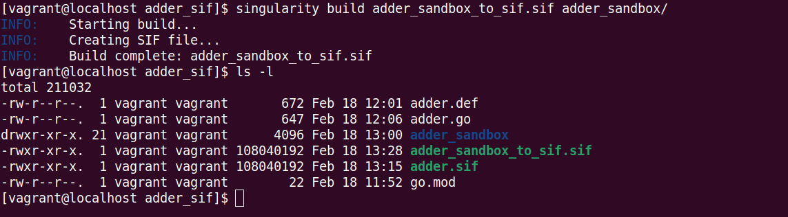
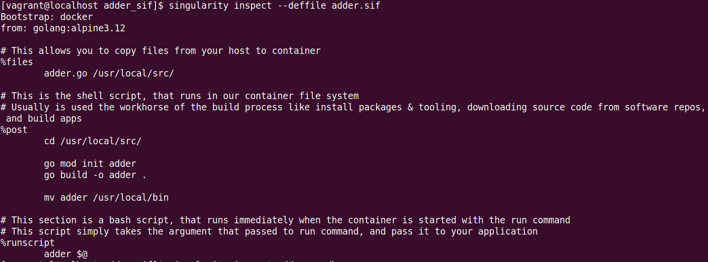
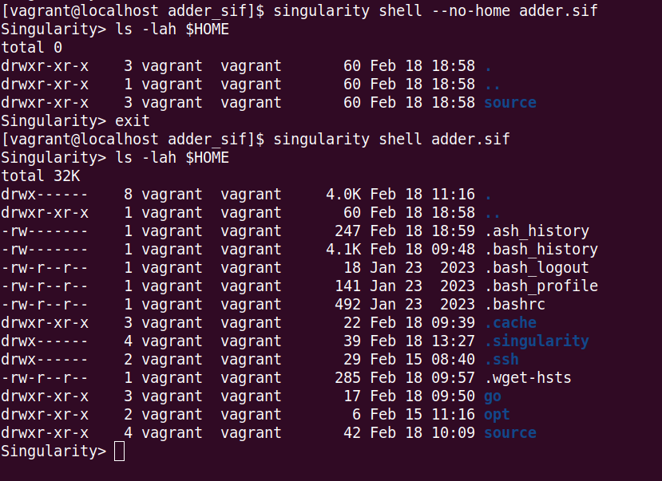
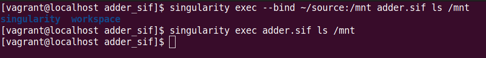
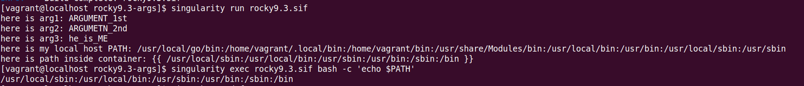
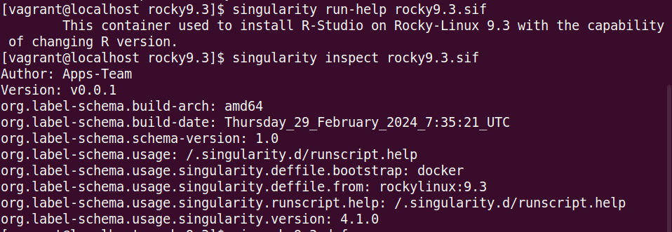

Singularity
Singularity (rootless containers for HPC): installing it, building SIF images, converting from Docker, bind mounts and definition-file variables.
Table of Content
1- Intro
Singularity is a rootless container solution, which means that we can bring up a container as user on a system, and the container process retains that user identity and cannot be used to gain additional privileges on the system.
Singularity uses image format called Singularity Image Format "SIF". This format is unique for only Singularity.
Singularity contains the ecosystem to integrate with other containers format like Docker.
Shared Working directory!
It's also interesting to note that the current working directory within this container is the same as the current working directory outside the container on my host; This is possible because singularity mounts several directories from your host environment like /home into the container file by default; This gives the illusion of simply swapping the user space of your linux distrubtion while keeping all of your user data intact; this allows your containerized applications to read and write data within user owned locations just like they are being run natively on the host
A great 5-mins intro tutorial illustrated by CtrlQ channel on youtube, found here.
2- Installation
Follow the steps in the INSTALL markdown file on Singularity' Github.
when executing the ./mconfig to make the configuration file, some packages were not installed, so this error arise;
fuse / fuse3 (libfuse / libfuse3) headers are required to build squashfuse.To solve this we need to install both libraries;
sudo yum install fuse-devel fuse3-devel- Note this also works with 'dnf'
3- Simple test - Docker alpine
To test, you can run a simple container of docker image for linux alpine
singularity shell docker://alpine
# will be inside the shell of linux alpine
# to check os
cat /etc/os-release
# The output should be linux alpine.What is Alpine Linux?
Alpine Linux is a security-focused, lightweight Linux distribution designed for power users who prioritize security, simplicity, and efficiency.
Why used with containers?
Alpine's primary feature is its small size, which enables it to start quickly and run in environments very low in memory and storage, such as containers or embedded devices.
4- Build sif for Adder App
The script is provided in seperate file, go check it.
To create a go module, follow along with this tutorial from go.dev docs.
To start your module, first use go mod init command:
go mod init adder
# go: creating new go.mod: module adderAccording to the docs:
The go mod init command creates a go.mod file to track your code's dependencies. So far, the file includes only the name of your module and the Go version your code supports. But as you add dependencies, the go.mod file will list the versions your code depends on. This keeps builds reproducible and gives you direct control over which module versions to use.
To test adder.go locally:
go run adder.go 5 10
# output: Result: 15To build the app:
singularity build --fakeroot adder.sif adder.def--fakeroot:
This allows us to build our container as a normal user without any elevated privileges. If you wanted to omit this flag you would need to use sudo before running singularity in order to have elevated privileges on your system.
Doing this allows you to pretend to be the root user inside of your container without actually granting singularity elevated privilleges on host system.

Building Sif container for app adderTo run the app:
singularity run adder.sif 5 105- More Deeper Singularity Tech
Now we have our first impression of using Singularity, let's go deeper and understand more.
5.1- Two Ways to Build a Container
||Sandbox|Image| |-|-|-| |Details|"Which is really just a directory"!! Singularity support create a directory with the entire OS and some Singularity metadata in your current working directory.| "Immutable Images"!! we can build an image where the container encapsulates everything that cannot be modified, so our developing environment becomes eternal. Benefits|During testing and debugging you may want an image format that is writable, you can also use shell, exec & run commands|This ensures reproducible and verifiable images. |Code|singularity build --fakeroot adder.sif adder.def|singularity build --fakeroot --sandbox adder_sandbox/ adder.def

Sandbox format is a directory with 21 files includedCheck Singularity docs for Sandbox Directories sections.
5.2- Converting Images from One Format to Another
Using the build command, you can build a container from an existing container.
# Convert from a sandbox format to sif image immutable format.
singularity build new-sif sandboxNote:
Becarefull of breaking the reproducibility if you have altered your sandbox outside of the context of definition file, so you are advised to exercise care.
5.3- Notice: Size Difference between [SIF, Sandbox] Formats
As notices in the image above showing the size of sif file format is much larger than the sandbox directory format!!
This should come from many different reasons:
- As SIF images typically include not only the filesystem layers but also metadata, including environment variables, labels, and other information associated with the container.
- Unlike Sandbox, refers to the directory-based container image format used Singularity, where the container image is represented as a directory containing the filesystem layers and associated metadate. So Singularity accesses the env variables, labels and other info needed directoly from local filesystem.
Let's see the size from converting sandbox format to SIF format:

Converting from sandbox to sif format, and check the size5.4- Immutable Images Modification?
To modify the content of an image:
- it should first be in the sandbox format.
- Add the option --writeable to allow to modify the container, and the changes will actully be saved into the container and will presist across uses.
- In case of root privillege required to install some apps, you will have to enter the container with sudo command from the start.
singularity shell --writable <sandbox>
sudo singularity shell --writable <sandbox>5.5- Inspect Definition File of a Container
To inspect the definition file that was used to build the image [both sif & sandbox] formats;
singularity inspect --deffile adder.sig
Inspect definition file of a Singularity image5.6- Running Container from Docker File
You can directly build a container from a DockerFile, with Singilarity starting version 4.1, using the OCI Runtime Support.
singularity build --oci adder.oci.sif ./DockerfileNotes:
- --oci Mode, does not mount a user's $HOME (similar to --compat in native mode); when tested it, there are no any mounted directories, so I have to do it manually using --bind .
`bash singularity exec --oci adder.oci.sif ls # no output` - To solve this, instead of using --bind, we could simply use --no-compat option according to the docs.
`bash singularity exec --oci --no-compat adder.oci.sif ls # output a directory contents`
Older version, there are two option so far I know about:
- Convert DockerFile to Definition file either manually, third-party tool, or even ChatGPT. Then build you container image normally.
- Build a Docker image, then upload to the Docker server, then build the Singularity image from Docker image.
- Build from Dockerfiles as regular (non-OCI-SIF) build
5.7- singularity.conf file
This file is used to edit all the configuration of singularity, could be found in directory "/singularity/builddir/singularity.conf".
You can edit the mount directories when a singularity container is running (mainly the system administrator task).
For more info in the docs: The Singularity Config File
Also it could edit the config from the command line using the singularity config command.
5.8- System Bind
For Bind Paths and Mounts, we can control to un/mount a directory to the container using --no-mount/--bind, regarding the configuration defined in singularity.confg file.
Example to unmount /home directory from the container:
singularity shell --no-home adder.sif
# Equivalent to
singularity shell --no-mount home adder.sif
Unmount $HOME directory from Image# We only need to check if it's work, so we need to execute a simple command in the container, not running it all.
# General format: singularity exec --bind <target_dirs_to_mount, seperated_by_comma>:<target mount point> <Container.sif> Command to execute
singularity exec --bind ~/source:/mnt adder.sif ls /mnt
singularity exec adder.sif ls /mnt
Bind directory into /mnt directory--mount
Starting from v3.9, they added flag --mount with the following format:
--mount type=bind,src=<source>,dst=<destination>[,<option>]...This could be useful in case of a path containing ":", which is not possible with --bind
# Mount a path containing ':' (not possible with --bind)
$ singularity run \
--mount type=bind,src=/my:path,dst=/mnt \
mycontainer.sif
# Mount a path containing a ','
$ singularity run \
--mount type=bind,"src=/comma,dir",dst=/mnt \
mycontainer.sifSINGULARITY_BIND
In case you have lots of directories we need to bind into our container, it's better and more advanced to use the Singularity variable "SINGULARITY_BIND", and set its value to all directories you want to bind.
# Outside the container
export SINGULARITY_BIND="${WORKDIR}/run:/run,${WORKDIR}/file:/file"- Yes you could use and host environment variables, as you are executing this command in the local host not container.
According to the documentation:
If a flag is represented by both a CLI option and an environment variable, and both are set, the CLI option will take precedence. This is true for all environment variables with the exception of SINGULARITY_BIND and SINGULARITY_BINDPATH, which are combined with the --bind option / argument pair, if both are present.
5.9- Variable in .def File
According to "Templating: How to Pass Values into Definition file" docs, Variables could be supported in def file using the {{ placeholder }}, and define the variables in %arguments section in def file.
Let's take an example of def file:
Bootstrap: docker
From: rockylinux:9.3
%startscript
export PATH={{ arg4 }}:$PATH
%runscript
echo "here is arg1:" {{ arg1 }}
echo "here is arg2:" {{ arg2 }}
echo "here is arg3:" {{ arg3 }}
echo "here is my local host PATH:" {{ arg4 }}
echo "here is path inside container:" {{ $PATH }}
%arguments
arg1="ARGUMENT_1st"
arg2="ARGUMETN_2nd"
arg3=$AHMED
arg4=$PATHLet's build this image:
singularity build --fakeroot rocky9.3.sif rocky9.3.defRunning this container results in:
here is arg1: ARGUMENT_1st
here is arg2: ARGUMETN_2nd
here is arg3: he_is_ME
here is my local host PATH: /usr/local/sbin:/usr/local/bin:/usr/sbin:/usr/bin:/sbin:/bin
here is path inside container: {{ /usr/local/sbin:/usr/local/bin:/usr/sbin:/usr/bin:/sbin:/bin }}Setting Default Variables' Values
Using the
Assign build-time Variables' Values
Singularity gives you the capability to assign a new value to overwrite the default value defined in .def file during the build process of the container image.
This can be achieved by the option --build-arg :
singularity build --fakeroot --build-arg arg4=<SOME_VALUE> rocky9.3.sif rocky9.3.defYou can set any value you want even if it's a environment variable of the local host (e.g. $PATH, etc...).

6- Tips, Notes & Troubleshooting
|Tip, Note, Troubleshoot|Details| |-|-| Troubleshoot| If you receive warnings from the Perl language about the locale being incorrect, you can usually fix them with export LC_ALL=C Note| Starting with v3.4.0, the encrypted containers became a feature, and the decryption occurs at runtime completely within kernel space, so there is no intermediate, decrypted version of the container on disk. Check Encrypted Containers. Tip| It is recommended by sylabs (Singularity creators), and Dockers to not build containers using the root user, in this blog talking about the Common Vulnerabilities and Exposures CVE-2019-5736, and how this motivate to build Singularity.</br> This vulnerability is categorized as a "container escape" vulnerability, meaning an attacker who exploits it could potentially escape from a container and gain root access to the host system by overwriting the host runc binary, so consequently obtain host root access. Tip|From the docs, binding paths to non-existent points within the container can result in unexpected behavior when used in conjunction with the --writable flag, and is therefore disallowed. If you need to specify bind paths in combination with the --writable flag, please ensure that the appropriate bind points exist within the container. If they do not already exist, it will be necessary to modify the container and create them. Tip| You can export $SINGULARITY_BIND as env variable with all directories you want to mount inside your container. Tip| Not highly recommended to build a OCI-SIF container from Dockerfile using --oci, It may break any runscripts or conda environments in the container!. That's because the Singularity is not fully optimized for OCI standard container format yet. "They basically don't speek the same language!!". Tip|Try to add more info/description for def file, to be documented, using sections {%labels, %help}, so you can easily use commands {inspect, run-help} to get that documentation. "A good container tells the user how to interact with it"</br>

7- Apptainer
update: The new version of singularity is called apptainer one can install that easily on rockylinux.